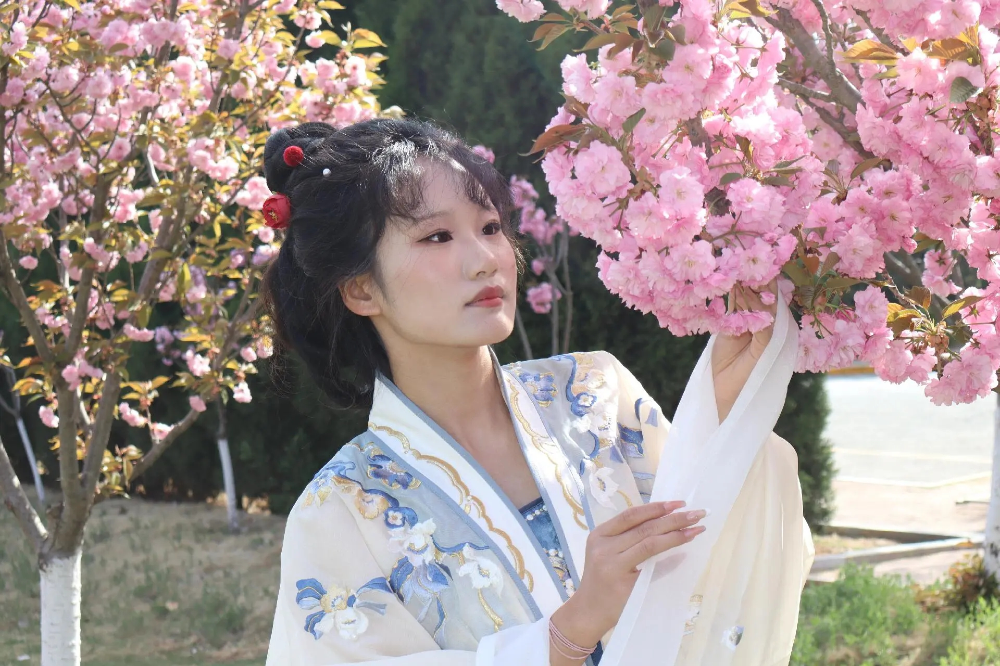
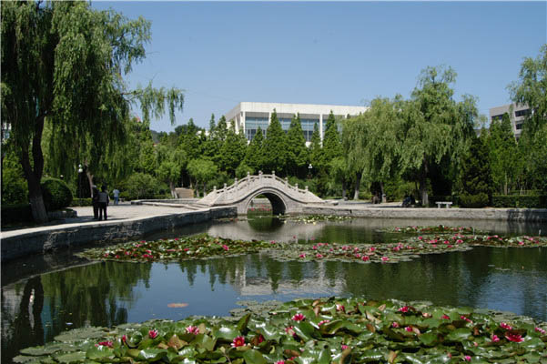

当春风拂过鲁东大学的校园，沉睡了一整个冬天的草木便次第苏醒，将整座校园晕染成一幅生机盎然的春日画卷。从南门进入校园，首先映入眼帘的便是主干道两侧的樱花大道，每年三月末四月初，粉白相间的樱花如云似霞，层层叠叠地缀满枝头，微风拂过，花瓣便如雪花般簌簌落下，铺就一条浪漫的花径，引得无数师生驻足拍照，成为校园里最动人的春日符号。沿着樱花大道前行，便是校园中心的映月湖，湖面如镜，倒映着岸边的垂柳与远处的教学楼，柳丝依依，在春风中轻摆腰肢，嫩黄的柳芽缀满枝头，仿佛给湖水镶上了一圈灵动的绿边。湖中的野鸭与锦鲤在水中嬉戏，泛起层层涟漪，为静谧的湖面增添了无限生机。校园的各个角落，都被春日的色彩填满：图书馆前的玉兰花洁白如雪，教学楼旁的迎春花金黄灿烂，操场边的海棠花粉嫩娇艳，就连不起眼的草坪上，也冒出了星星点点的二月兰，紫蓝色的小花在阳光下肆意绽放，将校园的每一寸土地都染上了春日的温柔。
除了繁花与湖水，鲁东大学的春日风光更藏在校园的每一处细节里。清晨的校园，薄雾尚未散尽，阳光透过树叶的缝隙洒下斑驳的光影，鸟儿在枝头婉转啼鸣，晨读的学子们坐在湖边的石凳上，朗朗书声与鸟鸣声交织，构成了校园里最动听的春日序曲。午后的阳光温暖而不炽热，学子们三三两两坐在草坪上，或看书、或聊天、或晒太阳，享受着春日的惬意与美好。傍晚时分，夕阳将天空染成温暖的橘红色，映月湖的水面波光粼粼，教学楼的灯光次第亮起，春日的校园在暮色中更显静谧与温馨。鲁东大学的春日，不仅是视觉的盛宴，更是心灵的洗礼，每一缕春风、每一朵花开、每一片绿意，都在诉说着青春与希望，让每一位身处其中的学子，都能感受到生命的蓬勃与美好，在春日的校园里，奔赴属于自己的成长与未来。

